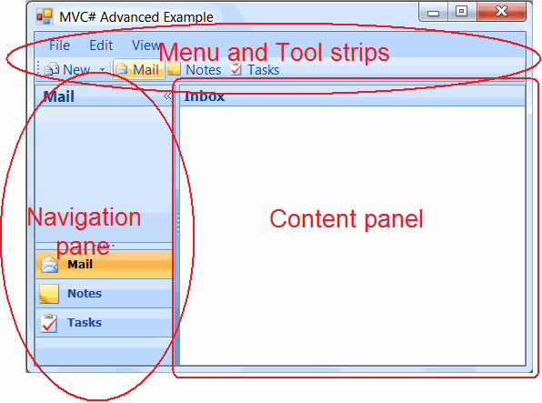

MVC# Advanced Customization (Office 2007 UI and more)
The source code of this example can be found under "Examples\Advanced (Office2007 UI and more)\"
subfolder of the MVC# root folder. The framework itself can be downloaded from www.MVCSharp.org/download.aspx.
Introduction
Using 3rd-party components (Office 2007-like UI)
Outlook-like navigation
Extended view and interaction point definitions
Views in multiple assemblies
Customized Controller creation
Adding views dynamically
Summary
Introduction
In the earlier articles (here
and here - read them prior to proceeding)
we have got acquainted with MVC# - a framework for simplifying the usage of the
Model-View-Presenter pattern in .NET applications. We have covered all basic requirements
and scenarios of using the MVP architectural pattern. However in the real-world
conditions application's requirements diverge from those basic ones. Complex applications
often demand for an advanced customization and fine-tuning. And, of course, robust
frameworks should cope well with such specific requirements.
This article steeps deeper into the MVC# framework capabilities demonstrating its
advanced usage scenarios. These scenarios range from extending view and task descriptions
to customizing navigation and presentation styles. Each advanced feature is covered
in a separate article section and may be read independently.
Using 3rd-party components (Office 2007-like UI)
The major drawback of many existing MVC/MVP frameworks is that they require certain
UI components to be used with them. For example the ASP.NET MVC framework comes
with its own set of UI elements, CAB (Composite UI Application Block) is either
not compatible with many 3rd-party components. With such frameworks a developer
finds himself restricted in choosing the UI components he likes. MVC#, on the other
hand, does not impose any limitations of such kind. Developers may use MVC# with
any 3rd-party library they are committed to. In this article we are using MVC# with
3rd-party UI components for creating Office 2007-like user interface.
The main form of our application will be constituted of menu with toolbar strips,
an Outlook-like navigation pane on the left and an Outlook-like content panel on
the right (see the picture below). To apply the Outlook 2007 style to the menu and
toolbar strips we will use an open-source 3rd-party renderer component by
ComponentFactory (downloadable from
here). The Outlook-like navigation pane we will use is the open-source
component by Muhammed Şahin (get it
here). And the Outlook-like content pane is the slightly modified Outlook-style
panel from http://www.openwinforms.com.

By now we should have only placed the said 3rd-party controls on the form and set
their basic properties. Later on we will handle events from these controls and make
them interact with the framework.
Outlook-like navigation
When a user selects an item in the navigation pane an appropriate view should be
shown in the content pane on the right. In MVC# the way of switching between views
is defined by the views manager class. Therefore the desired kind of navigation can be implemented
by writing a custom WinformsViewsManager subclass - OutlookLikeViewsManager.
Firstly,
this new views manager should gain access to the content panel of the main form:
public class OutlookLikeViewsManager : WinformsViewsManager
...
protected override void InitializeFormView(Form form,
WinformsViewInfo viewInf)
{
base.InitializeFormView(form, viewInf);
// If it's main form then access its content panel.
if (form is MainForm)
contentPanel = form.Controls["contentPanel"] as OutlookPanelEx;
}
If a newly created view does not have a parent container then it should be placed
inside the content panel:
public class OutlookLikeViewsManager : WinformsViewsManager
...
protected override void InitializeUserControlView(UserControl ucView)
{
base.InitializeUserControlView(ucView);
if (ucView.Parent != null) return;
ucView.Parent = contentPanel;
ucView.Dock = DockStyle.Fill;
}
Whenever a view is activated it should be placed on top over other views:
public class OutlookLikeViewsManager : WinformsViewsManager
...
protected override void ActivateUserControlView(IView view)
{
base.ActivateUserControlView(view);
(view as UserControl).BringToFront();
}
Finally, in the Main form code we should handle the selection of an item inside
the navigation bar:
public partial class MainForm ...
...
void navBarListView_ItemActivate(object sender, EventArgs e)
{
Controller.NavigateToView((sender as ListView).FocusedItem.Text);
}
public class MainViewController : ControllerBase
...
public void NavigateToView(string viewName)
{
Task.Navigator.Navigate(viewName);
}
Extended view and interaction point definitions
The conventional way for describing View-Controller pairs is using [IPoint] attributes
inside the task declaration. Since views in our application are divided
into three categories (Mail, Notes, Tasks) we might want to supplement the [IPoint] attribute with additional category information.
So we will introduce the [IPointEx] attribute and the InteractionPointInfoEx class:
public class IPointExAttribute : IPointAttribute
{
private ViewCategory viewCat;
public IPointExAttribute(ViewCategory viewCat, Type controllerType,
bool isCommonTarget)
: base(controllerType, isCommonTarget)
{
this.viewCat = viewCat;
}
public ViewCategory ViewCategory
{
get { return viewCat; }
set { viewCat = value; }
}
}
public class InteractionPointInfoEx : InteractionPointInfo
{
private ViewCategory viewCat;
public ViewCategory ViewCategory
{
get { return viewCat; }
set { viewCat = value; }
}
}
For the new [IPointEx] attributes to be properly processed a custom
TaskInfoByAttributesProvider descendant is required:
public class TaskInfoByAttributesProviderEx : TaskInfoByAttributesProvider
...
protected override InteractionPointInfo CreateInteractionPointInfo(
string viewName, InteractionPointAttribute ipAttribute)
{
InteractionPointInfoEx result = new InteractionPointInfoEx();
result.ViewName = viewName;
result.ControllerType = ipAttribute.ControllerType;
result.IsCommonTarget = ipAttribute.IsCommonTarget;
result.ViewCategory = (ipAttribute as IPointExAttribute).ViewCategory;
return result;
}
The similar technique is applied when extending view definitions. Say, we want to
associate each view with the corresponding image name. Then we should introduce
the [ViewEx] attribute and the ViewInfoEx class:
public class ViewExAttribute : ViewAttribute
{
private string imgName;
public ViewExAttribute(Type taskType, string viewName, string imgName)
: base(taskType, viewName)
{
this.imgName = imgName;
}
public string ImgName
{
get { return imgName; }
set { imgName = value; }
}
}
public class ViewInfoEx : ViewInfo
{
private string imgName;
public ViewInfoEx(string viewName, string imgName, Type viewType)
: base(viewName, viewType)
{
this.imgName = imgName;
}
public string ImgName
{
get { return imgName; }
set { imgName = value; }
}
}
In order to interpret [ViewEx] attributes
we also need to create a DefaultViewInfosProvider descendant:
public class ViewInfosPrividerEx : DefaultViewInfosProvider
{
protected override ViewInfo newViewInfo(Type viewType, ViewAttribute vAtr)
{
return new ViewInfoEx(vAtr.ViewName,
(vAtr as ViewExAttribute).ImgName, viewType);
}
}
Before staring the main task the framework should be configured to use the above
TaskInfoByAttributesProviderEx and ViewInfosPrividerEx classes:
static class Program
{
[STAThread]
static void Main()
{
MVCConfiguration cfg = OutlookLikeViewsManager.GetDefaultConfig();
cfg.TaskInfoProviderType = typeof(TaskInfoByAttributesProviderEx);
cfg.ViewInfosProviderType = typeof(ViewInfosPrividerEx);
(new TasksManager(cfg)).StartTask(typeof(MainTask));
Application.Run(Application.OpenForms[0]);
}
}
Finally, view navigation links inside the navigation pane should be added with properly
set category and image:
public partial class MainForm ...
...
public override void Initialize()
{
TaskInfo ti = Controller.Task.Navigator.TaskInfo;
foreach (InteractionPointInfoEx ip in ti.InteractionPoints)
AddViewToNavPane(ip);
}
public void AddViewToNavPane(InteractionPointInfoEx ip)
{
TaskInfo ti = Controller.Task.Navigator.TaskInfo;
if (ip.ViewCategory == ViewCategory.None) return;
ViewInfoEx vi = ti.ViewInfos[ip.ViewName] as ViewInfoEx;
Image i = Resources.ResourceManager.GetObject(vi.ImgName) as Image;
imgList.Images.Add(ip.ViewName, i);
ListView lv = lvMail;
switch (ip.ViewCategory)
{
case ViewCategory.Mail: lv = lvMail; break;
case ViewCategory.Notes: lv = lvNotes; break;
case ViewCategory.Tasks: lv = lvTasks; break;
}
lv.Items.Add(ip.ViewName, ip.ViewName);
}
Views in multiple assemblies
For projects with distinctly separated architecture views may be spread among several
DLL assemblies. If this is the case those assemblies should be appended to the MVCConfiguration.ViewsAssemblies
collection:
static class Program
...
static void Main()
{
MVCConfiguration cfg = OutlookLikeViewsManager.GetDefaultConfig();
cfg.ViewsAssemblies.Add(Assembly.Load(
"MVCSharp.Examples.AdvancedCustomization.SeparateViews"));
...
}
Customized Controller creation
As a rule
the controller type is specified in the interaction point description.
However, instead of such explicit declaration the default controller type could
be used. Each view category (Mail, Notes, Tasks) could be associated with its default
controller type. Consider, for instance, the following declaration:
public class MainTask : TaskBase
...
[IPointEx(ViewCategory.Notes)]
public const string PinnedNote = "Pinned Note";
Since the controller type is left unspecified above then the default controller
for the Notes category should be used - NotesController class.
Such functionality could be implemented by creating a custom Navigator subclass
with overriden GetController method:
public class NavigatorEx : Navigator
...
public override IController GetController(string viewName)
{
IController result = base.GetController(viewName);
if (result != null) return result;
InteractionPointInfoEx ip = TaskInfo.InteractionPoints[viewName]
as InteractionPointInfoEx;
Type cType;
switch (ip.ViewCategory)
{
case ViewCategory.Mail: cType = typeof(MailController); break;
case ViewCategory.Notes: cType = typeof(NoteController); break;
case ViewCategory.Tasks: cType = typeof(TaskController); break;
}
ip.ControllerType = cType;
return base.GetController(viewName);
}
In the above code an interaction point with unspecified controller type gets associated
to one of the default controller types (depending on the view category - see the
switch construct above). And then the controller is created with this
type.
To employ the new NavigatorEx class it should referenced with the help of the [Task]
attribute:
[Task(typeof(NavigatorEx))]
public class MainTask : TaskBase
...
Another option is applying the custom navigator class globally via the MVCConfiguration.NavigatorType
property.
Adding views dynamically
In our example application a user should be able to add views dynamically by clicking
the appropriate menu item. Depending on the clicked item views of different categories
will be created:
public partial class MainForm ...
...
private void newToolStripItem_Click(object sender, EventArgs e)
{
switch ((sender as ToolStripItem).Text)
{
case "Mail": Controller.CreateView(ViewCategory.Mail); break;
case "Note": Controller.CreateView(ViewCategory.Notes); break;
case "Task": Controller.CreateView(ViewCategory.Tasks); break;
}
}
public class MainViewController : ControllerBase
...
public void CreateView(ViewCategory c)
{
IViewsManager vm = Task.Navigator.ViewsManager;
InteractionPointInfoEx ip = (vm as IDynamicViewsManager).CreateView(c);
(View as IMainView).AddViewToNavPane(ip);
}
The actual view creation method will reside in the OutlookLikeViewsManager class
and will do the following: a) Add a new (properly configured) InteractionPointInfoEx
instance to the interaction point descriptions collection for the task and b) Add a
new (also configured) ViewInfoEx to the view descriptions collection for the task:
public class OutlookLikeViewsManager: WinformsViewsManager,IDynamicViewsManager
...
public InteractionPointInfoEx CreateView(ViewCategory vc)
{
InteractionPointInfoEx result = new InteractionPointInfoEx();
result.ViewName = vc.ToString() + " " + (ViewInfos.Count-1).ToString();
result.IsCommonTarget = true;
result.ViewCategory = vc;
Navigator.TaskInfo.InteractionPoints[result.ViewName] = result;
ViewInfoEx vi = new ViewInfoEx(result.ViewName, "", null);
switch (vc)
{
case ViewCategory.Mail:
vi.ImgName = "Mail"; vi.ViewType = typeof(MailView); break;
case ViewCategory.Notes:
vi.ImgName = "Notes"; vi.ViewType = typeof(NoteView); break;
case ViewCategory.Tasks:
vi.ImgName = "Tasks"; vi.ViewType = typeof(TaskView); break;
}
ViewInfos.Add(vi);
return result;
}
Summary
Throughout this article we have studied a number of advanced MVC# framework features.
These features help dealing with complicated application's requirements which often
appear in real-world projects. With the discussed customization techniques developers
can fully harness MVC# power to creating complex Model-View-Presenter applications.
The source code of this example can be found under "Examples\Advanced (Office2007 UI and more)\"
subfolder of the MVC# root folder. The framework itself can be downloaded from www.MVCSharp.org/download.aspx.